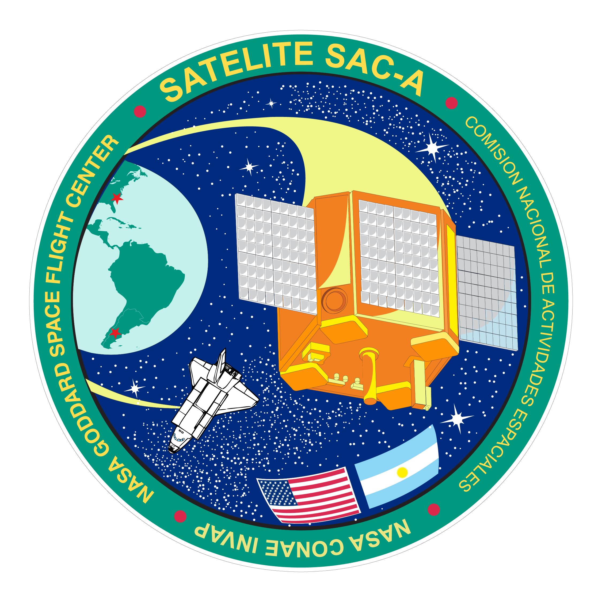
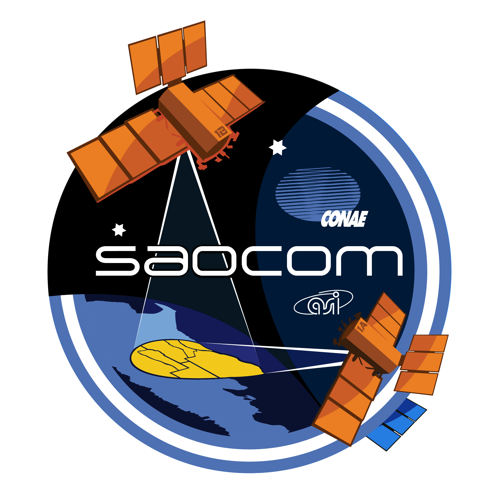
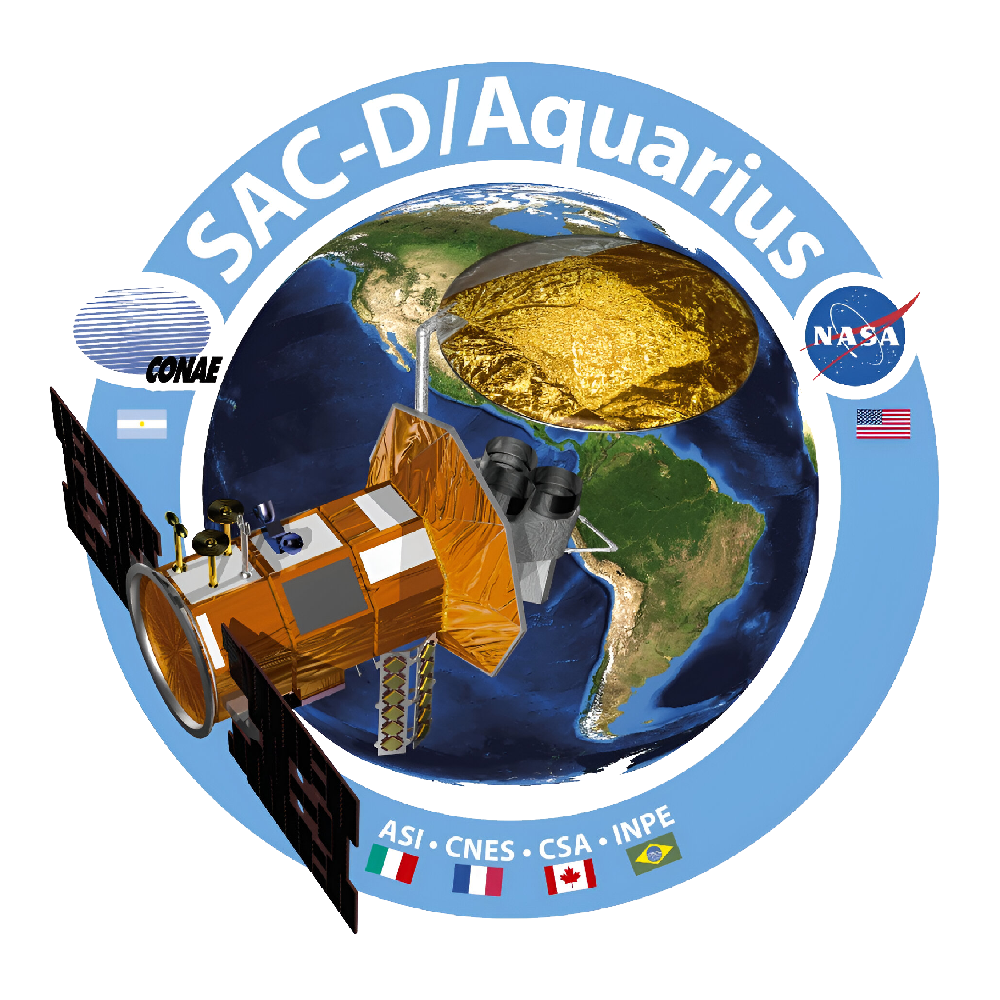
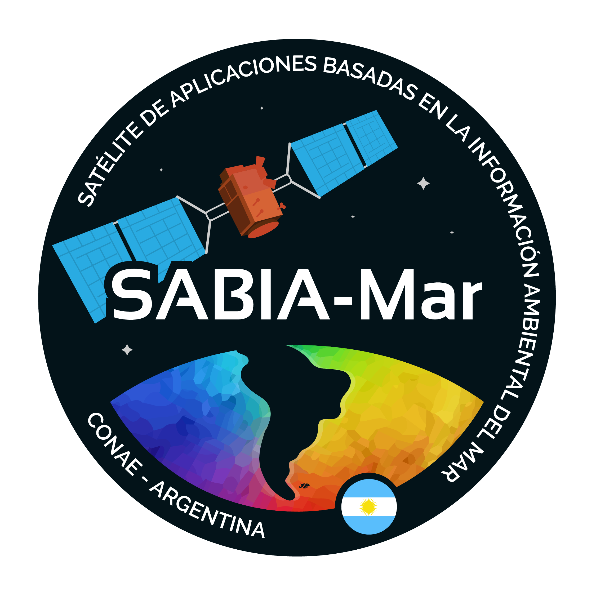
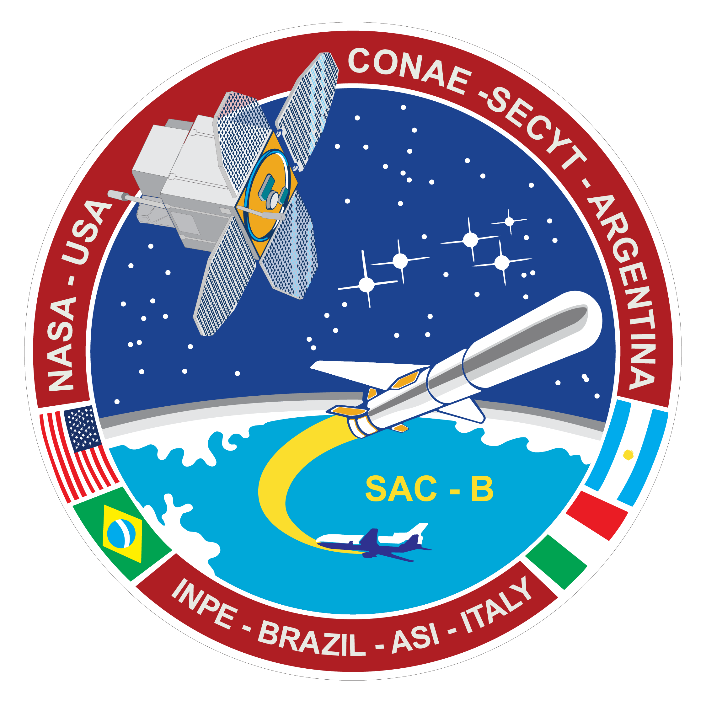

Sistemas de Propulsión Avanzada NEP
Simulador Didáctico de Telemetría y Línea de Aprendizaje Aeroespacial Nacional
Altitud / Distancia: 0 km
Velocidad del Vector: 0.00 km/s
Empuje Iónico Continuo: 0.00 N
Núcleo Térmico HTS: 290 K
Archivo Histórico: Divulgación UNCIENCIA (UNC)
Producción de la Universidad Nacional de Córdoba sobre las misiones biológicas y el cohete Canopus II.
Nota de Divulgación: Esta simulación correlaciona el ascenso de un propulsor nuclear-eléctrico contemporáneo con hitos del patrimonio aeroespacial local, partiendo desde las primeras experiencias de física suborbital que despertaron vocaciones científicas en las aulas de nuestro país.
1967 - 1969 (Altitud Suborbital: 82 - 150 km)
1. Umbral de la Física Espacial: Ratón Belisario, Cohete Canopus II y el Mono Juan
El propulsor interplanetario cruza la atmósfera superior. En esta misma frontera física se gestó nuestro primer gran acercamiento a la historia aeroespacial: las misiones de la CNIE. Con los lanzamientos del Ratón Belisario (1967, Yarará) y el Mono Juan (1969, Canopus II), Argentina se posicionó como el cuarto país del mundo en enviar seres vivos al espacio y recuperarlos con vida, validando los primeros desarrollos nacionales en telemetría biológica y balística de combustible sólido.
1998 (Altitud de Órbita LEO: 370 km)
2. Arquitectura de Cómputo e Instrumentación: Satélite SAC-A

El vector alcanza la Órbita Baja Terrestre (LEO). Esta región coincide con el despliegue del SAC-A (CONAE), concebido para probar tecnologías informáticas nativas, paneles solares nacionales y sistemas de orientación por magnetómetros en condiciones extremas. Este paso técnico estructuró la capacidad de procesar datos en órbita, base fundamental para la aviónica autónoma de cualquier nave espacial actual.
2018 (Altitud de Órbita LEO: 620 km)
3. Gestión Energética Compleja: Constelación SAOCOM 1

El propulsor requiere activar las bobinas iónicas para aceleración continua. El antecedente directo en alta demanda eléctrica en el espacio es la serie SAOCOM 1 de la CONAE. Su radar de apertura sintética (SAR) requirió el diseño de módulos de almacenamiento y acondicionamiento energético críticos, escala de ingeniería que un motor NEP optimiza mediante energía nuclear.
2011 (Altitud de Órbita LEO: 670 km)
4. Observatorio del Medio Ambiente: Observatorio SAC-D / Aquarius

A los 670 km de altitud, el propulsor cruza la histórica órbita del SAC-D. Esta misión incorporó el instrumento Aquarius de la NASA junto a desarrollos argentinos complejos, diseñados específicamente para medir la salinidad oceánica y la humedad del suelo a escala global, aportando valiosos modelos térmicos y de fluidos en condiciones espaciales extremas.
Presente Operativo (Órbita Heliosíncrona: 700 km)
5. Teledetección Oceánica de Alta Resolución: SABIA-Mar 1

El simulador alcanza los 700 km, cota exacta donde opera el satélite SABIA-Mar 1, desarrollado en conjunto por CONAE e INVAP. Su función primordial radica en generar mapas de los océanos y costas con alta resolución espacial, aportando datos soberanos fundamentales para la productividad del mar y el estudio del cambio climático global.
2000 (Altitud Heliosíncrona: 705 km)
6. Integración Internacional: Satélite SAC-C

Apenas un poco más arriba, a los 705 km, se ubica el legado del SAC-C. Esta emblemática misión de observación de la Tierra hizo historia al integrar de forma oficial la prestigiosa Constelación Matutina de la NASA, consolidando la confianza de agencias globales en la calidad de la ingeniería de software y hardware de manufactura argentina.
Vanguardia Histórica (Altitud Máxima: 70.000 km)
7. Récord Nacional en el Espacio Profundo: Proyecto ATENEA

Saliendo de la órbita terrestre baja, el vector intercepta el umbral de los 70.000 km. Aquí se inscribe la hazaña del microsatélite argentino ATENEA. Al operar en una órbita elíptica de gran altitud —el doble de la geoestacionaria— durante la histórica misión Artemis II, se consolidó formalmente como el objeto tecnológico de desarrollo nacional que ha alcanzado la mayor distancia de la Tierra hasta la fecha.
Espacio Profundo (Cinturón de Asteroides: ~3.0 UA del Sol)
8. Destino Interplanetario: Inserción Orbital en 16 Psyche
La escala conmuta a unidades astronómicas (UA). Con el reactor operando de manera constante, el empuje iónico continuo compensa la escasez de radiación solar en los bordes del sistema solar interno. Las ecuaciones de transferencia orbital logran interceptar el núcleo metálico del asteroide 16 Psyche, consolidando la transición teórica desde aquellos primeros desarrollos suborbitales de nuestra juventud hacia la exploración del espacio profundo.